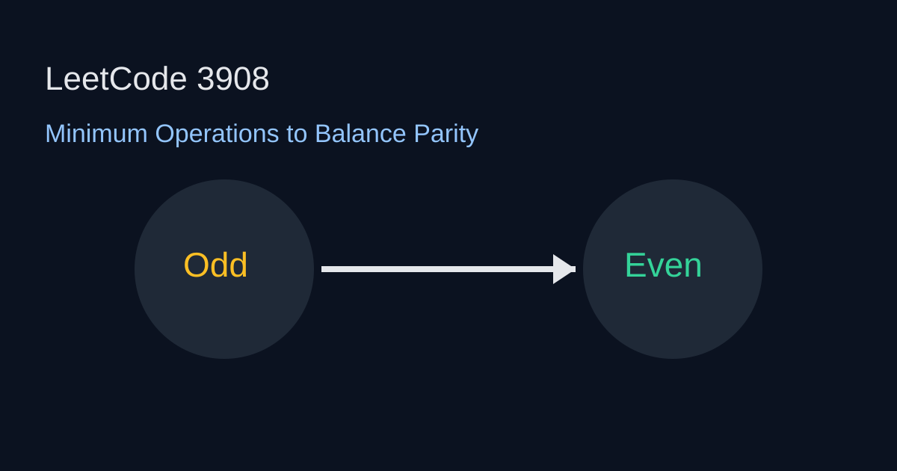

LeetCode 3908: Minimum Operations to Balance Parity (Greedy / Counting)
LeetCode 3908GreedyCountingToday we solve LeetCode 3908 - Minimum Operations to Balance Parity.
Source: https://leetcode.com/problems/minimum-operations-to-balance-parity/

English
Problem Summary
Count odd and even numbers. One operation can fix the parity gap by moving one element to the opposite parity side under the problem rule, so the minimum operations equals half of the count difference.
Key Insight
Only the parity count imbalance matters, not the exact values. If odd and even differ by d, each operation reduces the gap by 2.
Complexity
Time O(n), Space O(1).
Reference Implementations (Java / Go / C++ / Python / JavaScript)
class Solution {
public int minOperations(int[] nums) {
int odd = 0, even = 0;
for (int x : nums) {
if ((x & 1) == 0) even++;
else odd++;
}
return Math.abs(odd - even) / 2;
}
}func minOperations(nums []int) int {
odd, even := 0, 0
for _, x := range nums {
if x%2 == 0 { even++ } else { odd++ }
}
if odd > even { return (odd-even)/2 }
return (even-odd)/2
}class Solution {
public:
int minOperations(vector<int>& nums) {
int odd = 0, even = 0;
for (int x : nums) ((x & 1) ? odd : even)++;
return abs(odd - even) / 2;
}
};class Solution:
def minOperations(self, nums: list[int]) -> int:
odd = sum(x & 1 for x in nums)
even = len(nums) - odd
return abs(odd - even) // 2var minOperations = function(nums) {
let odd = 0, even = 0;
for (const x of nums) {
if ((x & 1) === 0) even++;
else odd++;
}
return Math.floor(Math.abs(odd - even) / 2);
};中文
题目概述
统计奇数与偶数个数。根据题目允许的操作，每次可让奇偶数量差缩小 2，因此最少操作数就是两者差值的一半。
核心思路
答案只由奇偶数量差决定，与具体数值无关。设差值为 d，每次操作消去 2，所以结果是 d/2。
复杂度
时间复杂度 O(n)，空间复杂度 O(1)。
多语言参考实现（Java / Go / C++ / Python / JavaScript）
class Solution {
public int minOperations(int[] nums) {
int odd = 0, even = 0;
for (int x : nums) {
if ((x & 1) == 0) even++;
else odd++;
}
return Math.abs(odd - even) / 2;
}
}func minOperations(nums []int) int {
odd, even := 0, 0
for _, x := range nums {
if x%2 == 0 { even++ } else { odd++ }
}
if odd > even { return (odd-even)/2 }
return (even-odd)/2
}class Solution {
public:
int minOperations(vector<int>& nums) {
int odd = 0, even = 0;
for (int x : nums) ((x & 1) ? odd : even)++;
return abs(odd - even) / 2;
}
};class Solution:
def minOperations(self, nums: list[int]) -> int:
odd = sum(x & 1 for x in nums)
even = len(nums) - odd
return abs(odd - even) // 2var minOperations = function(nums) {
let odd = 0, even = 0;
for (const x of nums) {
if ((x & 1) === 0) even++;
else odd++;
}
return Math.floor(Math.abs(odd - even) / 2);
};
Comments